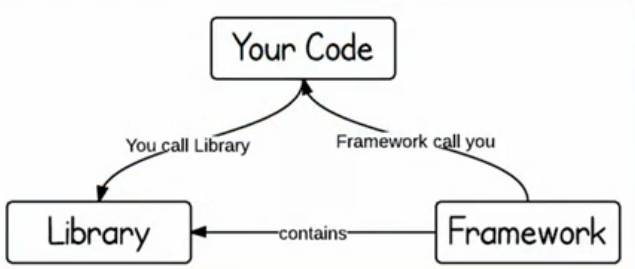

模块化
NOTE：以下讨论都是基于 JavaScript 的模块组织（每个模块均以文件形式组织），而非工程的模块化。
The secret to building large app is never build arge apps. Break your applications into small pieces. Then, assemble those testable, bite-sized pieces into your big application.
Justin Meyer
其他语言中的模块支持
- Java -
import - C# -
using - css -
@import
但在 JavaScript 中并不存在模块组织在并不支持，于是产生了很多，模块系统。
模块的职责
- 封装实现（将复杂的内容于外界个例）
- 暴露接口（外部可通过接口使用模块）
- 声明依赖（提供给模块系统使用）
模块的使用
反模式（Anti-Pattern）
反模式既没有使用任何设计模式。
math.js
function add(a, b) {
return a + b;
}
function sub(a, b) {
return a - b;
}
上面的代码有下面的几个缺点：
- 无封装性
- 接口结构不明显
calculator.js
var action = 'add';
function compute(a, b) {
switch (action) {
case 'add': return add(a, b);
case 'sub': return sub(a, b);
}
}
上面的代码也有几个缺点：
- 没有依赖声明
- 使用全局状态
字面量（Object Literal）
math.js
var math = {
add: function(a, b) {
return a + b;
},
sub: function(a, b) {
return a - b;
}
};
结构性好，但没有访问控制。
calculator.js
var calculator = {
action: 'add',
compute: function(a, b) {
switch (action) {
case 'add': return add(a, b);
case 'sub': return sub(a, b);
}
}
}
同样没有依赖声明
IIFE（Immediately-invoked Function Expresion)
其为自执行函数。
版本一
calculator.js
var calculator = (function(){
var action = 'add';
return {
compute: function(a, b) {
switch (action) {
case 'add': return add(a, b);
case 'sub': return sub(a, b);
}
}
}
})();
上面的代码可以进行访问控制，但是不能进行依赖声明。
版本二
calculator.js
var calculator = (function(m){
var action = 'add';
function compute(a, b) {
switch (action) {
case 'add': return m.add(a, b);
case 'sub': return m.sub(a, b);
}
}
return {
compute: compute;
}
})(math)
上面的代码虽然可以显示的声明依赖，但是仍然污染了全局变量，而且必须手动进行依赖管理。
命名空间（Namespace）
命运空间可以解决全局变量的污染的问题。
math.js
namespace('math', [], function(){
function add(a, b) { return a + b; }
function sub(a, b) { return a - b; }
return {
add: add,
sub: sub
}
})
calculator.js
// 依赖声明 依赖注入
// | |
namespace('calculator', ['math'], function(m){
var action = 'add';
function compute(a,b) {
return m[action](a, b);
}
return {
compute: compute;
}
})
模块管理
复杂的模块管理，不能单纯的通过代码文件的排列顺序来进行管理。于是引入了模块系统，它有下面的职责：
- 依赖管理（加载、分析、注入、初始化—）
- 决定模块的写法
常用的模块系统有 Common.JS、AMD、语言基本的模块化。
CommonJS
CommonJS 是一个模块规范，通常适用于非浏览器环境（NodeJS）。
A module spec for JavaScript outside the browser.
math.js
function add(a, b) {
return a + b;
}
function sub(a, b) {
return a - b;
}
exports.add = add;
exports.sub = sub;
calculator.js
// 依赖声明
var math = require('./math');
function Calculator(container) {
// ...
}
Calculator.prototype.compute = function(){
this.result.textContent = math.add(...);
}
// 接口暴露
exports.Calculator = Calculator;
优点
- 依赖管理成熟可靠
- 社区活跃且规范接受度高
- 运行时支持且模块化定义简单
- 文件级别的模块作用域隔离
- 可以处理循环依赖
缺点
- 不是标准组织规范
- 同步请求未考虑浏览器环境（可以使用 Browserify 来解决）
# browserify 为 npm 下命令行工具
# > 为 Linux/Unix 添加至命令
browserify file0.js > file1.js;
打包后的文件如下所示。
(function e(t,n,r){function s(o,u){if(!n[o]){if(!t[o]){var a=typeof require=="function"&&require;if(!u&&a)return a(o,!0);if(i)return i(o,!0);var f=new Error("Cannot find module '"+o+"'");throw f.code="MODULE_NOT_FOUND",f}var l=n[o]={exports:{}};t[o][0].call(l.exports,function(e){var n=t[o][1][e];return s(n?n:e)},l,l.exports,e,t,n,r)}return n[o].exports}var i=typeof require=="function"&&require;for(var o=0;o<r.length;o++)s(r[o]);return s})({1:[function(require,module,exports){
},{}]},{},[1]);
AMD（Asynchronous Module Definition）
适合异步环境的依赖管理方案。
math.js
// 依赖列表
// |
define([], function(){
function add(a, b) { return a + b; }
function sub(a, b) { return a - b; }
// 接口暴露
return {
add: add,
sub: sub
}
})
calculator.js
define(['./math'], function(math){
function Calculator(container) {
// ...
}
Calculator.prototype.compute = function(){
this.result.textContent = math.add(...);
};
// 暴露接口
return {
Calculator: Calculator;
}
})
优点
- 依赖管理成熟可靠
- 社区活跃且规范接受度高
- 转为异步环境制作，适合浏览器
- 支持 CommonJS 的书写方式
- 通过插件 API 可以加载非 JavaScript 资源
- 成熟的打包构建工具，并可结合插件一同使用
缺点
- 模块定义繁琐，需要额外嵌套
- 酷基本的支持，需要引入额外的库
- 无法处理循环依赖
- 无法实现条件加载
Simplified CommonJS Wrapping
使用同样的 CommonJS 的依赖管理书写方法，之后在使用正则表达式来提取依赖列表。
define(function(require, exports){
// 依赖声明
var math = require('./math');
function Calculator(container) {
// ...
}
Calculator.prototype.compute = function(){
this.result.textContent = math.add(...);
}
// 接口暴露
exports.Calculator = Calculator;
})
Loader Plugins
允许调用处理脚本外的其他资源（例如 HTML 与 CSS 文件），这样就可以形成一个完整的组件。
完整组件 = 结构 + 逻辑 + 样式
ECMAScript 6 Module
ECMAScript 6 中的模块化管理。
math.js
function add(a, b) {
return a + b;
}
function sub(a, b) {
return a- b;
}
// export 关键字暴漏接口
export {add, sub}
calculator.js
import {add} from './math';
class Calculator {
constructor(container) {}
compute(){
this.result.textContent = add(+this.left.value, +this.right.value);
}
}
export{Calculator}
优点
- 真正的规范未来标准
- 语言基本支持
- 适用于所有的 JavaScript 允许环境
- 可用于处理循环依赖
缺点
- 规范未达到稳定级别
- 暂无浏览器支持
SystemJS
SystemJS 是一个动态模块加载器，下面是它的一下特性：
- 支持加载 AMD
- 支持加载 CommonJS
- 支持加载 ES6
- 支持加载 Transpiler 也可支持任意类型资源
模块管理的对比
- IIFE，没有解决核心的依赖分析和注入的问题。
- AMD，可以直接使用，库基本的支持。
- CommonJS，可以直接使用，在运行时的支持。
- ES6，语言本身的支持。
使用插件工具，可以将后三种模块管理系统进行相互转换。
框架
NOTE：以下讨论都是基于 JavaScript 的框架。
库（Library）与框架（Framework）的区别

库 为针对特定问题的解答具有专业性，不控制应用的流程且被动调用。
框架 具有控制翻转，决定应用的生命周期，于是便集成了大量的库。
解决方案
常见的解决方案针对的方面：
- DOM
- Communication
- Utility
- Templating
- Component
- Routing（单页系统中尤其重要）
- Architecture
使用外部专业解决方案的原因 可以提高开发效率，可靠性高（浏览器兼容，测试覆盖），也配备优良的配套（文档及工具）。如果外部框架的质量可可靠性无法保证或无法满足业务学期时则不应该选择外部的框架。
实际项目中的使用
- 开发式：基于外部模块系统自由组合
- 半开放：基于一个定制的模块系统，内部外部解决方案共存
- 封闭式：深度定制的模块系统不引入外部模块